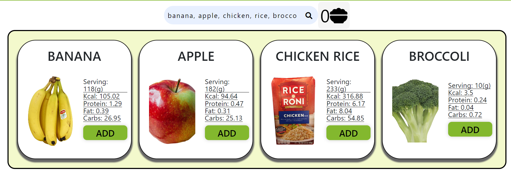
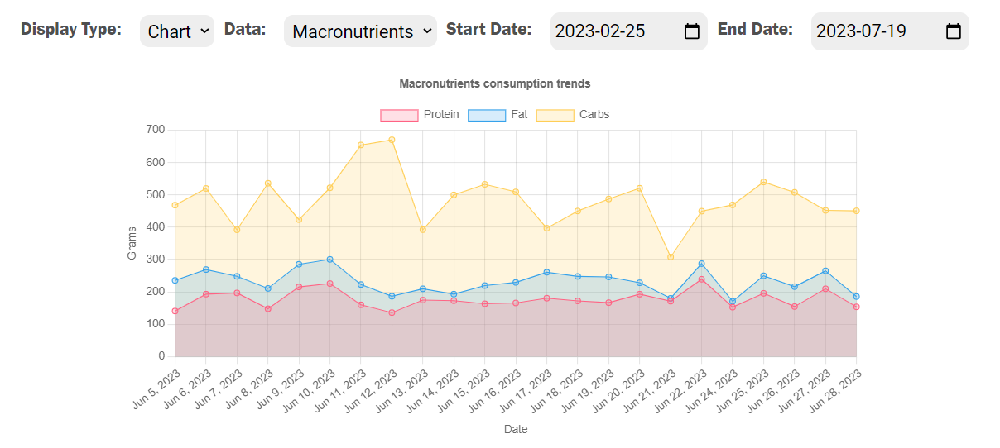

CICO Health is a web application developed by the team I led in the course SWP391 - Software Development Project. Designed as a fitness app, it provides essential features for users to manage their health and fitness regimen effectively. These features include logging daily meals with detailed macronutrient and energy information, recording various exercises like cardiovascular and resistance workouts, and offering comprehensive statistics for nutrition and exercise through interactive tables and charts.
As the Project Manager and Lead Developer for CICO Health, my responsibilities encompassed both strategic leadership and hands-on technical development.
One core feature is finding information about common food items, I implemented it by using a third party API provided by Nutritionix
Using the feature is simple, just navigate to the Food Search page, then write out item names in natural language

The central front-end function written in JavaScript to serve search results:
function sendRequest(query) {
let request = new XMLHttpRequest();
let url = "https://trackapi.nutritionix.com/v2/natural/nutrients"; //The URL to send the request to
let body = {query: query}; //The food(s) to search for};
let applicationID = "appid"; //The application ID
let APIKey = "apikey"; //The API key
request.open("POST", url, true); //Open the request
//Set the request headers
request.setRequestHeader("Content-Type", "application/json");
request.setRequestHeader("x-app-id", applicationID);
request.setRequestHeader("x-app-key", APIKey);
//Set the request callback
request.onreadystatechange = function () {
if (request.readyState === XMLHttpRequest.DONE && request.status === 200) {
let response = request.responseText; //Get the response
response = JSON.parse(response); //Parse the response into JSON
let foods = response.foods; //Get the foods array
foods = removeDuplicate(foods); //Filter out duplicate foods
dislpayFoods(foods); //Render the info in view
addSearchResultEventListener(); //Add the search result event listener
showSelected(selectedFoods);
}
};
request.send(JSON.stringify(body)); //Send the request
}
Another important feature is nutrition statistics, this feature provides data visualization for the food you log over a period of times.
The app provides options such as data type, display type, start day and end day to customize how you want to view the data.
Below is Macronutrients statistics, displayed with multiple-line line chart:

JS code to serve the chart on front-end:
function displayMacronutrientsChart(analyzedData, chartElement) {
// Separate the macronutrient data
const proteinData = analyzedData.map((obj) => obj.proteinConsumed);
const fatData = analyzedData.map((obj) => obj.fatConsumed);
const carbsData = analyzedData.map((obj) => obj.carbsConsumed);
const dateLabels = analyzedData.map((obj) => obj.date);
// Create the chart using Chart.js
const ctx = chartElement.getContext("2d");
if (displayedChart) displayedChart.destroy();
const chart = new Chart(ctx, {
type: "line",
data: {
labels: dateLabels,
datasets: [
{//Display protein line
},
{//Display fat line
},
{//Display carb line
},
],
},
options: {//Display options
},
});
return chart;
}
Source: JosephPham324/CICOHealth-SWP391